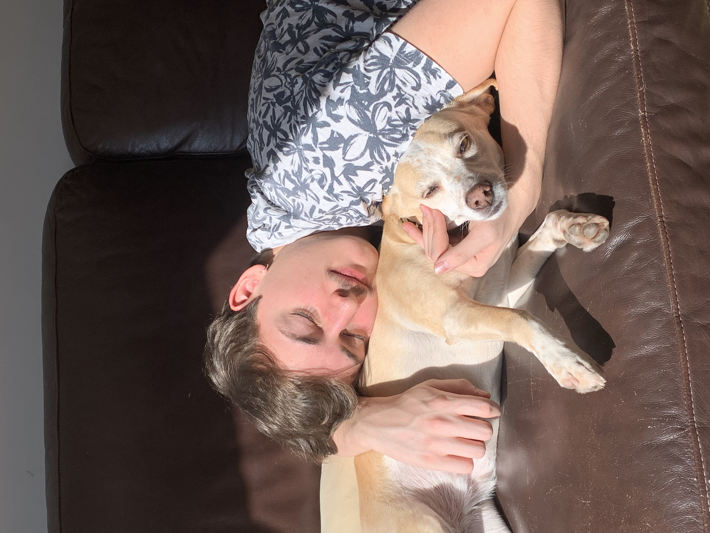

Nombre: Tomás Gaete Bularz
Inicio
UAI
Matías Garín
Alonso Iturriaga
Información sobre mí:
En general puedo decir que soy una persona floja que le gusta dejar todo a ultimo minuto como este trabajo pero es mejor hablar de datos concretos sobre mi, los que serían los siguientes:
Universidad:
Universidad Adolfo Ibañez
Carrera: Ingeniería civil informática
Tengo un perro y en general me encantan los animales

Me deje un bigote horrible en las vacaciones de invierno.
Me gusta ver series y anime sobretodo cuando estoy haciendo algo que me da flojera o agota mucho.
Es probable que cuando sea viejo me vea asi: